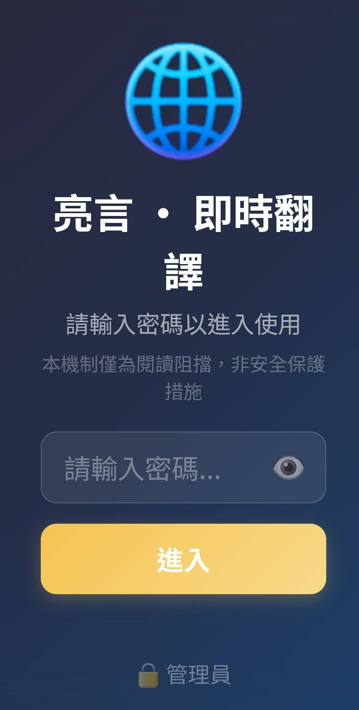

到上一章為止，你的 App 已經很完整了：打字翻譯、語音翻譯、即時口譯、面對面對話、拍照與檔案翻譯、天氣與旅遊問答都能用了。
一個彈窗，讓使用者填自己的金鑰、調語速、選自動朗讀，全部記在自己的瀏覽器。
進站前先輸密碼，做基本的存取阻擋。密碼不存明文，用 SHA-256 雜湊比對。
設定面板多一個下拉選單，選了整頁立刻換色——紫金、海洋藍、森林綠…七款任選。
一個「有門禁、能自訂金鑰、還能一鍵換背景配色」的 App。重整頁面先跳密碼視窗；進站後點右上角 ⚙️ 就能填金鑰、換主題色，關掉設定下次打開全都記得。
localStorage 就是瀏覽器幫每個網站準備的一個小抽屜。你把資料（例如金鑰、語速、主題色）放進去，關掉分頁、關掉電腦都還在，下次打開同一個網站又拿得回來。
它是存在使用者自己的瀏覽器裡，不是我們的伺服器。所以每個人填的金鑰只有自己看得到，換一台電腦就要重填。
SHA-256 是一種把任何文字變成一串固定長度亂碼（64 個字元）的算法。同樣的輸入永遠得到同樣的亂碼，但反過來算不回去——這是「單行道」。
所以我們不把密碼明文寫在程式裡，只寫它的雜湊（指紋）。使用者輸入密碼時，前端當場算指紋、跟存好的指紋比對，一樣就放行。就算有人翻你的程式碼，也只看到指紋、看不到原始密碼。
祕密是：整個 App 的顏色，沒有一處寫死，全部指向一組叫「CSS 變數」的公用色票——像 --bg1（底色）、--gold（重點金）。按鈕、卡片、文字全都寫「用 --gold」。
換色時，我們只要在 <body> 掛上一個標記 data-theme="ocean"，CSS 就會用另一套值覆蓋這組變數。一改，全站幾百處顏色同時跟著變。
| 檔案 | 加什麼 |
|---|---|
| static/js/app.js | DEFAULT_CFG 預設值、loadCfg/saveCfg 讀寫設定、openSettings/cfg_save、applyTheme() 換色 |
| templates/index.html | 設定彈窗 #settingsModal（含金鑰欄位、🎨 主題下拉）＋ 密碼閘門的 SHA-256 比對 <script> |
| static/css/style.css | :root 定義預設色票，再為每個主題寫一組 body[data-theme="..."] 覆蓋 |
📂 打開這個檔案：static/js/app.js，找到 // ===== 9. 設定面板 / 密碼 / 換風格 ===== 這一區，貼在它下面（放在這區最前面，因為後面很多地方都會用到設定）。💡 照骨架分區放，不用想「貼哪」，區塊名字對上就行。
💬 對你的 AI 助手這樣說（複製整段貼過去）：
幫我在 app.js 最上面做一個設定系統： 定義 DEFAULT_CFG 物件，包含供應商 provider、各種金鑰（geminikey/tavilykey/owmkey）、 語速 rate、自動朗讀 autospeak、背景主題 theme（預設 'purple'）。 再寫 loadCfg() 從 localStorage 的 'liang_cfg' 讀出並補上預設值、 saveCfg(c) 存回去。最後 let cfg = loadCfg() 載入目前設定。 我是新手，請附完整程式碼與逐段說明。
// static/js/app.js — 設定系統 const DEFAULT_CFG = { provider:'gemini', baseurl:'https://api.openai.com/v1', apikey:'', model:'', geminikey:'', tavilykey:'', owmkey:'', // 集中管理的金鑰（皆選填） rate:1, autospeak:true, theme:'purple', // 背景風格主題 s_langA:'zh-TW', s_langB:'en', }; function loadCfg(){ try{ return {...DEFAULT_CFG, ...JSON.parse(localStorage.getItem('liang_cfg')||'{}')}; } catch{ return {...DEFAULT_CFG}; } } function saveCfg(c){ localStorage.setItem('liang_cfg', JSON.stringify(c)); } let cfg = loadCfg(); // 開機就把上次存的設定載進來
| 這幾行 | 在做什麼 |
|---|---|
DEFAULT_CFG = {...} | 把「所有設定的預設值」列成一張清單。使用者沒改過的，就用這裡的值 |
{...DEFAULT_CFG, ...JSON.parse(...)} | 先鋪一層預設，再蓋上使用者存過的值。好處：以後新增設定項，老使用者也不會少那一格 |
localStorage.getItem('liang_cfg') | 從瀏覽器抽屜拿出上次存的那包設定（一串文字） |
try{...}catch{...} | 萬一抽屜裡的資料壞了、解析失敗，就退回全預設，不讓程式當掉 |
saveCfg(c) | 把設定打包成文字，塞回抽屜（鍵名 liang_cfg） |
let cfg = loadCfg() | 程式一啟動就載入，之後全 App 都讀這個 cfg |
F12 打開主控台，輸入 loadCfg() 按 Enter，會印出一包設定物件，代表抽屜通了。> loadCfg() { provider: "gemini", geminikey: "", rate: 1, autospeak: true, theme: "purple", ... }
loadCfg is not defined → 這段貼太下面或存檔後沒重整。存檔、重整頁面再試。📂 打開這個檔案：templates/index.html，把彈窗放在 <body> 內、其他內容的後面。
💬 對 AI 這樣說：
幫我在 index.html 加一個設定彈窗 <div id="settingsModal">（預設 hidden）： 裡面有「供應商」下拉、Gemini／Tavily／OpenWeatherMap 金鑰輸入框、 語速 range、自動朗讀 checkbox，還有一個「🎨 背景風格」的 <select id="cfg_theme">。 下面放「取消」和「儲存」兩顆按鈕。
<!-- 設定彈窗；平常靠 hidden 藏起來 -->
<div class="modal hidden" id="settingsModal">
<div class="modal-card">
<h2>設定</h2>
<h3>🔑 API 金鑰（集中管理）</h3>
<label>Gemini 金鑰（選填，留空用伺服器內建）
<input type="password" id="cfg_geminikey" placeholder="AIza…你的金鑰">
</label>
<label>Tavily 金鑰（旅遊問答上網查）
<input type="password" id="cfg_tavilykey" placeholder="tvly-…你的金鑰">
</label>
<h3>🎨 背景風格</h3>
<label>主題
<select id="cfg_theme">…（下一張補上七個選項）…</select>
</label>
<h3>語音朗讀 (TTS)</h3>
<label>語速 <input type="range" id="cfg_rate" min="0.5" max="1.5" step="0.1" value="1"></label>
<label class="check"><input type="checkbox" id="cfg_autospeak" checked> 翻譯完成後自動朗讀</label>
<div class="modal-actions">
<button id="cfg_cancel">取消</button>
<button class="primary" id="cfg_save">儲存</button>
</div>
</div>
</div>🔍 class="modal hidden"：這是一個「彈窗」，加了 hidden 平常就藏起來，等使用者點 ⚙️ 再拿掉 hidden 顯示。
🔍 每個 <input> 都有一個 id（像 cfg_geminikey）——這是給 JavaScript「認人」用的名牌，等一下讀寫設定就靠它找到這格。
🔍 金鑰欄用 type="password"，輸入會變成小圓點，不會被旁邊的人看光。
placeholder="AIza…你的金鑰" 只是提示範例，是灰字，不是真的金鑰。真正的金鑰由使用者自己填。cfg（供應商、金鑰）不是只給這一章用——前面所有功能的請求都讀同一份 cfg：翻譯（cfg.geminikey／cfg.provider）、拍照與檔案翻譯、旅遊問答（cfg.tavilykey）全靠它。所以這裡只要把金鑰收好，整個 App 的功能就都能用你自己的金鑰。而換風格只動 CSS 變數、不碰任何邏輯，翻譯照常運作。📂 打開這個檔案：static/js/app.js，找到 // ===== 9. 設定面板 / 密碼 / 換風格 ===== 這一區，貼在它下面（接在步驟一那段後面就好）。
💬 對 AI 這樣說：
幫我寫 openSettings()：把 cfg 裡的值填進設定彈窗每一格（含 cfg_theme）， 再拿掉 settingsModal 的 hidden 顯示它。 另外綁定「儲存」按鈕 cfg_save：把每一格的值收回 cfg、呼叫 saveCfg(cfg) 存起來、 關掉彈窗、跳一個「已儲存設定」的提示。「取消」則直接關掉彈窗。
// 打開設定：把目前 cfg 的值填進每一格 function openSettings(){ $('cfg_theme').value = cfg.theme || 'purple'; $('cfg_geminikey').value= cfg.geminikey || ''; $('cfg_tavilykey').value= cfg.tavilykey || ''; $('cfg_owmkey').value = cfg.owmkey || ''; $('cfg_rate').value = cfg.rate; $('cfg_autospeak').checked = cfg.autospeak; $('settingsModal').classList.remove('hidden'); // 顯示彈窗 } $('settingsBtn').addEventListener('click', openSettings); // 點 ⚙️ 打開 // 按「儲存」：把每一格收回 cfg 並存起來 $('cfg_save').addEventListener('click', ()=>{ cfg.geminikey = $('cfg_geminikey').value.trim(); cfg.tavilykey = $('cfg_tavilykey').value.trim(); cfg.owmkey = $('cfg_owmkey').value.trim(); cfg.rate = $('cfg_rate').value; cfg.autospeak = $('cfg_autospeak').checked; cfg.theme = $('cfg_theme').value; // 記住選的主題 applyTheme(cfg.theme); // 立刻套用（步驟五定義） saveCfg(cfg); // 寫進抽屜 $('settingsModal').classList.add('hidden'); toast('已儲存設定', false); });
| 這幾行 | 在做什麼 |
|---|---|
$('cfg_theme').value = cfg.theme | 開的時候：把 cfg 裡記住的值，回填到畫面上的每一格 |
classList.remove('hidden') | 拿掉隱藏，把彈窗顯示出來 |
settingsBtn ... click | 點右上角 ⚙️ 就呼叫 openSettings 打開設定 |
cfg.xxx = $('cfg_xxx').value | 存的時候：反過來，把畫面每一格的值收回 cfg 這個物件 |
saveCfg(cfg) | 把整包 cfg 寫進 localStorage，下次開機還在 |
toast('已儲存設定', false) | 跳一個綠色小提示，讓使用者知道存好了 |
:root 定義「預設紫金」這組色票變數，再為每個主題各寫一組覆蓋值。📂 打開這個檔案：static/css/style.css，貼在檔案最上面。
💬 對 AI 這樣說：
幫我在 style.css 最上面用 CSS 變數做主題系統： :root 定義預設紫金色票 --bg1/--bg2/--bg3（背景漸層三色）與 --gold（重點金）。 再為每個主題寫一組 body[data-theme="ocean"]、body[data-theme="forest"]… 覆蓋這些變數。給我 ocean（海洋藍）、forest（森林綠）、sunset（夕陽橙）三款示範。
/* 預設色票：紫金 */ :root { --bg1:#1a1030; --bg2:#2a1a4a; --bg3:#3a2560; /* 背景漸層三色 */ --gold:#f5c451; --gold-soft:#f7d98a; /* 重點金 */ } /* 換色：body 掛上 data-theme 就覆蓋上面的變數 */ body[data-theme="ocean"] { /* 海洋藍 */ --bg1:#0a1e33; --bg2:#12304f; --bg3:#1a4a70; --gold:#4fc3f7; --gold-soft:#9fdcff; } body[data-theme="forest"] { /* 森林綠 */ --bg1:#0d1f16; --bg2:#163524; --bg3:#1f4a30; --gold:#5bd18a; --gold-soft:#9fe6b8; } body[data-theme="sunset"] { /* 夕陽橙 */ --bg1:#2a1410; --bg2:#4a2418; --bg3:#6a2f1a; --gold:#ff9d5c; --gold-soft:#ffc79f; }
💡 專案裡還多做了 rose（玫瑰粉）、mono（暗夜黑省電）、light（日光淺色）三款，作法一模一樣——複製一組、換掉顏色值即可。
🔍 :root { --bg1:#1a1030; ... }：:root 是「全站最外層」。在這裡宣告的 --變數 全站都能用。這組是預設值（沒選任何主題時就用它）。
🔍 body[data-theme="ocean"] { --bg1:...; }：意思是「當 <body> 帶著 data-theme="ocean" 時，把 --bg1 等變數改成這一組」。因為它更具體，會蓋過 :root 的預設。
🔍 App 各處的按鈕、卡片早就寫成 background: var(--gold)、linear-gradient(var(--bg1), var(--bg2), var(--bg3))——變數一被覆蓋，它們全部自動跟著變，我們一行都不用改。
applyTheme()，把選到的主題名寫到 <body data-theme>；再讓下拉「一選就立刻預覽」、開機自動套用上次選的色。📂 打開這個檔案：static/js/app.js，一樣找到 // ===== 9. 設定面板 / 密碼 / 換風格 ===== 這一區，貼在它下面（接在步驟三那段後面）。
💬 對 AI 這樣說：
幫我寫 applyTheme(t)：把主題名寫到 document.body.dataset.theme（空的就用 'purple'）。 讓 cfg_theme 下拉「一選就立刻套用」做即時預覽（先不存）。 「取消」時還原成已儲存的 cfg.theme（撤銷預覽）。 程式最後 applyTheme(cfg.theme) 一次，開機就套用上次選的背景。
// 套用背景風格：把主題名寫到 <body data-theme>，CSS 依此覆蓋配色變數 function applyTheme(t){ document.body.dataset.theme = t || 'purple'; } // 選了主題立刻預覽（尚未儲存） $('cfg_theme').addEventListener('change', ()=> applyTheme($('cfg_theme').value)); // 取消：還原成已儲存的主題（撤銷剛才的即時預覽） $('cfg_cancel').addEventListener('click', ()=>{ applyTheme(cfg.theme); $('settingsModal').classList.add('hidden'); }); // …（省略：cfg_save 裡也會 applyTheme(cfg.theme)，見步驟三） applyTheme(cfg.theme); // 開機就套用上次選的背景風格
| 這幾行 | 在做什麼 |
|---|---|
document.body.dataset.theme = t | 等同在 <body> 加上 data-theme="ocean"，CSS 立刻換上那組色 |
cfg_theme … 'change' | 下拉一改就 applyTheme，做「選了立刻看到」的即時預覽（還沒存） |
cfg_cancel … applyTheme(cfg.theme) | 按「取消」時，還原成已儲存的主題——撤銷剛才的預覽，不弄髒設定 |
applyTheme(cfg.theme)（最後一行） | 程式一啟動就套用上次存的主題，開機即記得 |
saveCfg 寫進抽屜。預覽是暫時的，取消就回到原樣——這種設計最貼心。body[data-theme="..."]，換個名字、換掉顏色值，再到 <select> 加一個 <option> 就多一款。📂 打開這個檔案：templates/index.html；密碼視窗的 HTML 放 <body> 最前面，比對邏輯放 <script>。
💬 對 AI 這樣說：
幫我做一個前端密碼閘門：頁面一打開先蓋一層密碼視窗 #passwordGate。 使用者輸入密碼、按進入，用 crypto.subtle 算 SHA-256， 跟寫死的雜湊清單 BUILTIN_HASHES 比對，對了就記到 sessionStorage 並掀開視窗。 程式裡絕不出現明文密碼。並用 sessionStorage 記住「本次已通過」，重整不用再輸入。
// === 密碼閘門（SHA-256，閱讀阻擋用途，非安全保護）=== (function(){ // 只存雜湊、不存明文；換密碼＝換這裡的雜湊（用下面的生成器算） var BUILTIN_HASHES = ['貼上你用生成器算出的 SHA-256 雜湊']; var AUTH_KEY = 'liang_translate_authed'; var gate = document.getElementById('passwordGate'); if (!gate) return; // 本次已通過就直接放行（重整免再輸入） if (sessionStorage.getItem(AUTH_KEY) === '1'){ gate.style.display='none'; return; } function sha256(str){ var enc = new TextEncoder(); return crypto.subtle.digest('SHA-256', enc.encode(str)).then(function(buf){ return Array.from(new Uint8Array(buf)) .map(function(b){ return b.toString(16).padStart(2,'0'); }).join(''); }); } function checkPassword(){ var val = document.getElementById('pwInput').value.trim(); if(!val) return; sha256(val).then(function(hash){ if (BUILTIN_HASHES.indexOf(hash) !== -1){ // 指紋對上 sessionStorage.setItem(AUTH_KEY, '1'); gate.classList.add('hidden'); // 掀開進站 } else { document.getElementById('pwError').textContent = '密碼錯誤，請重新輸入'; } }); } document.getElementById('pwSubmit').addEventListener('click', checkPassword); })();
| 這幾行 | 在做什麼 |
|---|---|
BUILTIN_HASHES = [...] | 放「正確密碼的指紋」，不是明文。用下一張的生成器算出來貼進去 |
sessionStorage ... === '1' | 本次分頁已通過就直接放行，重整不用再輸入（關掉分頁才重問） |
sha256(val) | 用瀏覽器內建的 crypto.subtle 把輸入的密碼算成 64 字元指紋 |
BUILTIN_HASHES.indexOf(hash) !== -1 | 算出的指紋在清單裡＝密碼正確 |
sessionStorage.setItem(...) | 記下「這次已通過」，並掀開密碼視窗進站 |
pwError.textContent = ... | 不對就顯示「密碼錯誤」，不放行 |
MyPass123，正式請換自己的）。const BUILTIN_HASHES = ['…64 字元…'];。BUILTIN_HASHES，存檔重整。存檔後重整頁面，會先蓋一層密碼視窗；輸入正確密碼（例如你剛設的 MyPass123）按「進入」，視窗掀開才進到 App。

body[data-theme=...] 沒貼到，或某些顏色寫死沒改用 var(--gold)。確認 style.css 有那幾組覆蓋。cfg_save 裡 cfg.theme = $('cfg_theme').value 並 saveCfg。沒存＝只是預覽。BUILTIN_HASHES 還是範例字串，沒換成生成器算出的雜湊；或雜湊複製時多了空白／引號。cfg_save 有把每一格收回 cfg，且請求時有帶上金鑰（前面章節的 cfg.geminikey）。body[data-theme="ocean"]，改名成 candy、把 --gold 換成你喜歡的粉色，再到 <select> 加一個 <option value="candy">糖果粉</option>——你就多做了一款專屬主題。--gold 故意改成跟背景很接近的顏色，重整看看按鈕文字變得多難讀——體會「對比度」為什麼重要。Travel2026，換掉雜湊，重整後試舊密碼（應該被擋）與新密碼（應該放行）。做完這章，// ===== 9. 設定面板 / 密碼 / 換風格 ===== 這一區補上了，app.js 的骨架終於九區到齊（這章新增的用 ⭐ 標出來）：
| 區 | 內容 | 狀態 |
|---|---|---|
| 1 設定與語言 | DEFAULT_CFG、LANGS、小幫手 | ✅ |
| 2 翻譯 | translate() | ✅ CH06 |
| 3 語音辨識 STT | Recognizer、簡轉繁 | ✅ CH07 |
| 4 朗讀 TTS | speak() | ✅ CH08 |
| 5 即時 / 面對面 | Live 串流、雙向對話 | ✅ CH09~11 |
| 6 拍照 / 檔案翻譯 | vision 摘要 + 翻譯 | ✅ CH12~14 |
| 7 匯率 / 天氣 | 換算、Open-Meteo | ✅ CH15 |
| 8 旅遊助手問答 | Tavily + 供應商 | ✅ CH15 |
| 9 設定面板 / 密碼 / 換風格 | loadCfg/saveCfg、openSettings、applyTheme | ⭐ 這章新增 |
CH16 完成時的完整專案（已是可安裝的 PWA）。若你 CH16 做壞了，下載這個當起點再做 CH17。
做完 CH17 的完整專案（含設定面板、密碼閘門、背景風格切換）。拿來跟你自己的對照，或存起來。
這個生成器把整個前端檔案拆成幾個小目標。每個目標都有一段建議提示詞：複製 →（可自己加幾句）→ 貼到框裡 → 按「送出」，就會生出該段程式，一塊塊「併入」，最後湊出完整檔案，可直接下載。
只差最後一哩路——把它部署上線！下一章用 GitHub + Render，讓你走到哪都能用（密碼把關，只有你和授權的人進得來）。
下一章是重頭戲：把專案上傳 GitHub、在 Render 建立服務、設定環境變數，得到一個真實網址，手機打開就能用、能裝。
本課程與專案僅供阿亮老師課程學員學習使用，禁止修改、轉傳、散布或商業使用。